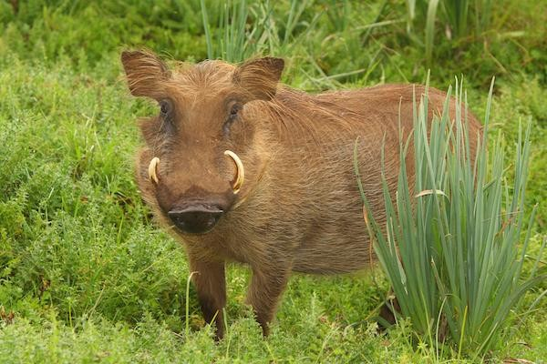

WARTHOGS
Phacochoerus is a genus in the family Suidae, commonly known as warthogs (pronounced wart-hog). They are pigs who live in open and semi-open habitats, even in quite arid regions, in sub-Saharan Africa.
WHERE WILL YOU FIND THEM?
You will find the warthogs on the second gate of the Zoo